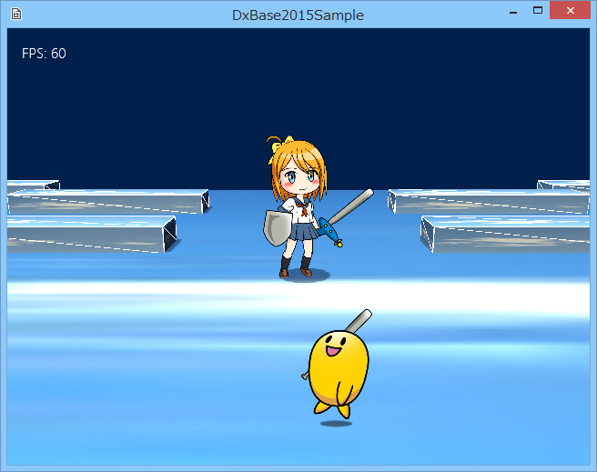
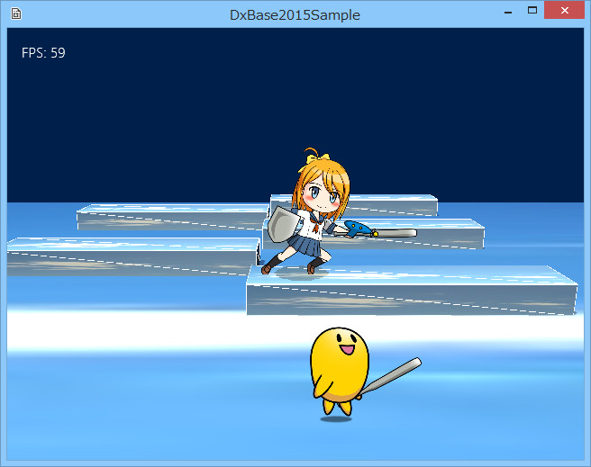
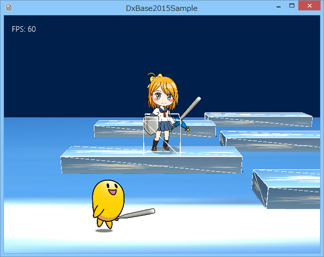
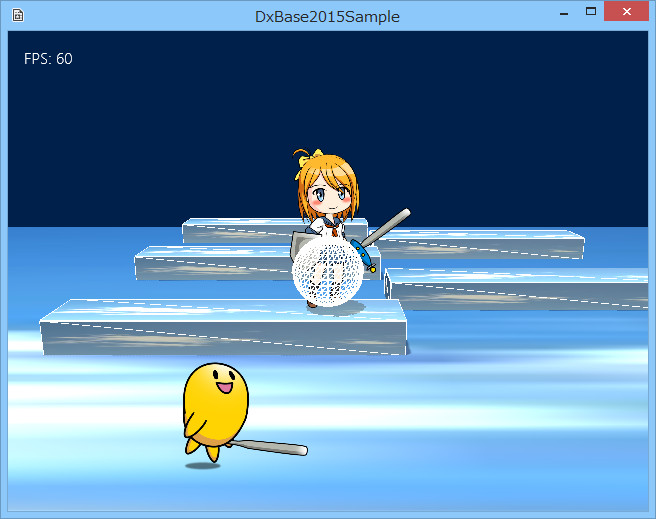
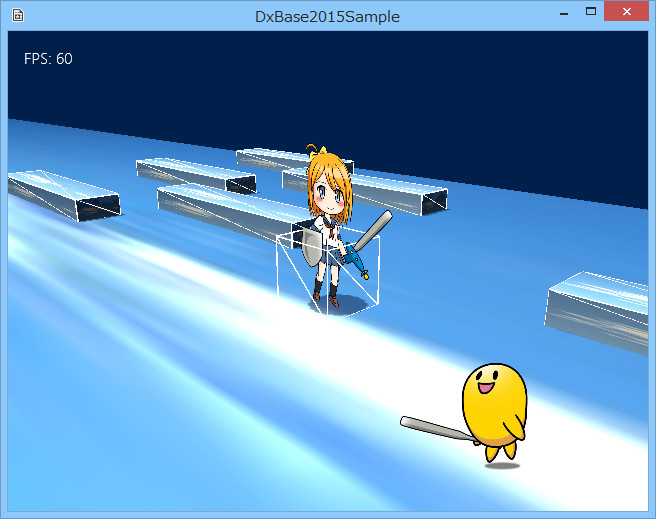

図3006a
まず、女の子の方がプレイヤーです。コントローラで操作できます。こちらは、３Ｄ空間上にSpriteStdio5データを３Ｄ上の厚さのない壁のように展開しています。これまで出てきたSquareメッシュのようなものだと思ってください。（以降便宜上、スクエアメッシュといいます。）

図3006b
//--------------------------------------------------------------------------------------
// class EggAnime : public SS5ssae;
// 用途: 卵のアニメーション
//--------------------------------------------------------------------------------------
class EggAnime : public SS5ssae{
float m_Span;
public:
//構築と消滅
EggAnime(const shared_ptr<Stage>& StagePtr, const wstring& BaseDir);
virtual ~EggAnime();
//初期化
virtual void Create() override;
virtual void Update()override;
};
//--------------------------------------------------------------------------------------
// class EggAnime : public SS5ssae;
// 用途: 卵のアニメーション
//--------------------------------------------------------------------------------------
//構築と消滅
EggAnime::EggAnime(const shared_ptr<Stage>& StagePtr, const wstring& BaseDir) :
SS5ssae(StagePtr, BaseDir, L"character_template_2head.ssae", L"attack1", true),
m_Span(10.0f)
{}
EggAnime::~EggAnime(){}
//初期化
void EggAnime::Create(){
//元となるオブジェクトからアニメーションオブジェクトへの行列の設定
Matrix4X4 mat;
mat.DefTransformation(
Vector3(1.0f, 1.0f, 1.0f),
Vector3(0, 0, 0),
Vector3(0, 0, 0)
);
SetToAnimeMatrix(mat);
//位置の初期化
auto PtrT = GetComponent<Transform>();
PtrT->SetPosition(Vector3(0, -25.0f, 0.2f));
//親クラスのCreateを必ず呼ぶ
SS5ssae::Create();
//値は秒あたりのフレーム数
SetFps(30.0f);
//スプライトのサイズ（1メートル当たりのピクセル）
SetSpritePixelParMeter(8.0f);
}
void EggAnime::Update(){
float ElapsedTime = App::GetApp()->GetElapsedTime();
auto PtrT = GetComponent<Transform>();
auto Pos = PtrT->GetPosition();
Pos.x += (m_Span * ElapsedTime);
if (abs(Pos.x) > 40.0f){
m_Span *= -1.0f;
}
PtrT->SetPosition(Pos);
//移動方向に向きを変える
if (span < 0){
PtrT->SetScale(1, 1, 1);
}
else{
PtrT->SetScale(-1, 1, 1);
}
//アニメーションを更新する
UpdateAnimeTime(ElapsedTime);
}
EggAnime::EggAnime(const shared_ptr<Stage>& StagePtr, const wstring& BaseDir) :
SS5ssae(StagePtr, BaseDir, L"character_template_2head.ssae", L"attack1", true),
//中略
//元となるオブジェクトからアニメーションオブジェクトへの行列の設定
Matrix4X4 mat;
mat.DefTransformation(
Vector3(1.0f, 1.0f, 1.0f),
Vector3(0, 0, 0),
Vector3(0, 0, 0)
);
SetToAnimeMatrix(mat);
//親クラスのCreateを必ず呼ぶ
SS5ssae::Create();
//--------------------------------------------------------------------------------------
// class Player : public SS5ssae;
// 用途: プレイヤー
//--------------------------------------------------------------------------------------
class Player : public SS5ssae{
shared_ptr< StateMachine<Player> > m_StateMachine; //ステートマシーン
//移動の方向を得る
float GetMoveX();
//最高速度
float m_MaxSpeed;
//減速率
float m_Decel;
//質量
float m_Mass;
//Zレールの位置の配列
vector<float> m_ZRail;
size_t m_ZRailIndex;
//一つ前のレール
size_t m_ZRailBeforIndex;
//丸影を作成するためのメッシュ
shared_ptr<CommonMeshResource> m_ShadowResource;
//データとゲームとの変換行列
Matrix4X4 m_ToAnimeMatrixLeft;
Matrix4X4 m_ToAnimeMatrixRight;
public:
//構築と破棄
Player(const shared_ptr<Stage>& StagePtr, const wstring& BaseDir);
virtual ~Player(){}
//初期化
virtual void Create() override;
//アクセサ
shared_ptr< StateMachine<Player> > GetStateMachine() const{
return m_StateMachine;
}
//モーションを実装する関数群
//移動して向きを移動方向にする
//移動距離を返す
float MoveRotationMotion();
void AnimeChangeMotion(const wstring& key, bool looped);
void LoopedAnimeUpdateMotion();
//Aボタンでジャンプするどうかを得る
bool IsJumpMotion();
//ジャンプスタート処理
void JumpStartMotion();
//ジャンプしている間の処理
//ジャンプ終了したらtrueを返す
bool JumpMotion();
//Bボタンでアタックするどうかを得る
bool IsAttackMotion();
//Bボタンでアタックする処理
bool AttackMotion();
//左スティックでZレールを変更するかどうか
bool IsRailChangeMotion();
//Zレール変更を開始する
void RailChangeStartMotion();
//Zレール変更を更新する
bool RailChangeMotion();
//Zレールを強制的に戻す
void RailChangeBeforStartMotion();
//Zレール変更を終了する
void RailChangeEndMotion();
//更新
virtual void Update() override;
virtual void Update2() override;
};
| ステート名 | 内容 | 呼ばれるモーション関数（可能性含む）、ChangeState()は省略 | |
|---|---|---|---|
| WaitState | 待機状態 | Enter | AnimeChangeMotion(L"wait", true) |
| Execute |
LoopedAnimeUpdateMotion() IsRailChangeMotion() MoveRotationMotion() |
||
| Exit | |||
| RailChangeState | レール変更 | Enter |
AnimeChangeMotion(L"charge", true) RailChangeStartMotion() |
| Execute |
LoopedAnimeUpdateMotion() RailChangeMotion() |
||
| Exit | RailChangeEndMotion() | ||
| WalkState | 通常移動 | Enter | AnimeChangeMotion(L"walk", true) |
| Execute |
LoopedAnimeUpdateMotion() IsRailChangeMotion() MoveRotationMotion() IsJumpMotion() |
||
| Exit | |||
| RunState | 走る状態 | Enter | AnimeChangeMotion(L"run",true) |
| Execute |
LoopedAnimeUpdateMotion() MoveRotationMotion() IsAttackMotion() IsJumpMotion() |
||
| Exit | |||
| JumpState | ジャンプ状態 | Enter | AnimeChangeMotion(L"jump_all", false) JumpStartMotion() |
| Execute |
MoveRotationMotion() |
||
| Exit | |||
| AttackState | アタック状態 | Enter | AnimeChangeMotion(L"attack2", false) SetFps(40.0f) |
| Execute |
MoveRotationMotion() |
||
| Exit | SetFps(30.0f) | ||
Player::Player(const shared_ptr<Stage>& StagePtr, const wstring& BaseDir) :
SS5ssae(StagePtr, BaseDir, L"character_template_3head.ssae", L"wait"),
//中略
{
m_ZRail = { 0, 2.0f, 4.0f, 6.0f, 8.0f };
m_ToAnimeMatrixLeft.DefTransformation(
Vector3(0.1f, 0.1f, 0.1f),
Vector3(0, 0, 0),
Vector3(0, -0.55f, 0.0f)
);
m_ToAnimeMatrixRight.DefTransformation(
Vector3(-0.1f, 0.1f, 0.1f),
Vector3(0, 0, 0),
Vector3(0, -0.55f, 0.0f)
);
}
//影の形（メッシュ）を設定
ShadowPtr->SetMeshResource(m_ShadowResource);

図3006c
以下は、衝突判定に、CollisionSphereを使い、ワイアフレームを表示させた場合です。
図3006d
また、カメラを、現在のMuCameraから、LookAtCameraにする場合は、
//0番目のビューのカメラを得る
//MyCameraである
// auto PtrCamera = dynamic_pointer_cast<MyCamera>(GetStage()->GetCamera(0));
//LookAtCameraである
auto PtrCamera = dynamic_pointer_cast<LookAtCamera>(GetStage()->GetCamera(0));
//最初のビューにパラメータの設定
// PtrView->ResetParamaters<MyCamera,
MultiLight>(rect, Color4(0.0f, 0.125f, 0.3f, 1.0f), 1, 0.0f, 1.0f);
PtrView->ResetParamaters<LookAtCamera,
MultiLight>(rect, Color4(0.0f, 0.125f, 0.3f, 1.0f), 1, 0.0f, 1.0f);

図3006e
のような画面になります。３Ｄ上の位置関係が一目瞭然ですね。卵型と女の子の、スプライトかスクエアメッシュかの違いも確認できます。
//ステートマシンの構築
m_StateMachine = make_shared< StateMachine<Player> >(GetThis<Player>());
//最初のステートをWaitStateに設定
m_StateMachine->SetCurrentState(WaitState::Instance());
//WaitStateの初期化実行を行う
m_StateMachine->GetCurrentState()->Enter(GetThis<Player>());
void Player::Update(){
//ステートマシンのUpdateを行う
//この中でステートの切り替えが行われる
m_StateMachine->Update();
}